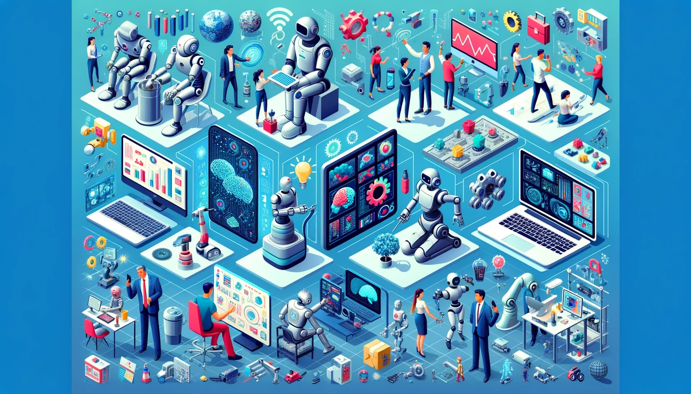
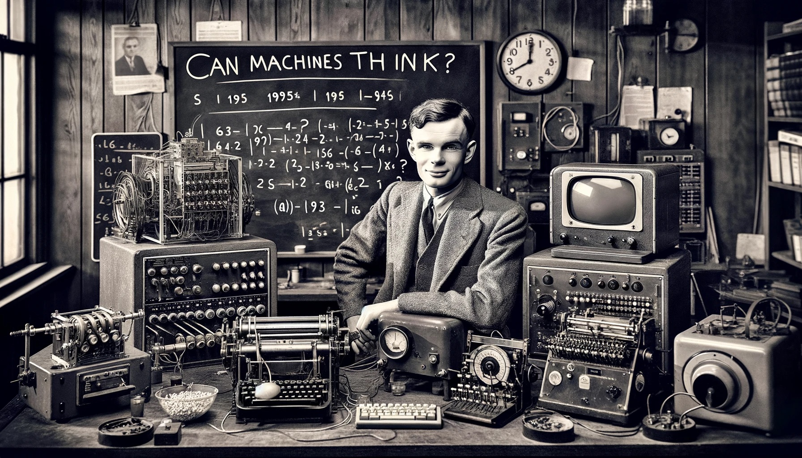
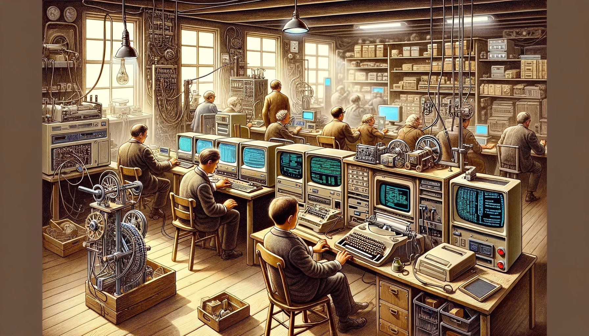
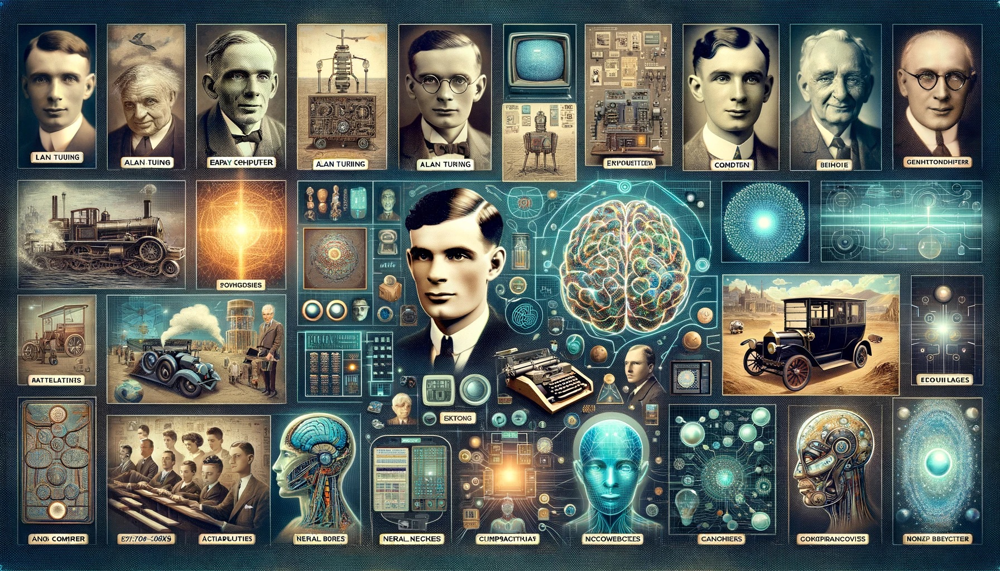

인공지능의 역사#
인공지능의 등장과 중요성#
인공지능의 정의#

인공지능(AI)은 기계에 인간의 지능을 모방하게 하는 것을 말함
사고, 학습, 문제 해결 능력을 기계에 구현
인간의 지능적 행동을 컴퓨터 프로그램을 통해 재현
AI는 알고리즘과 데이터를 기반으로 작동
인간과 비슷하거나 때로는 뛰어난 수행 능력을 지향
역사적 관점#

고대부터 인공적 지능 존재에 대한 상상
20세기 중반, 현대 AI의 시작
앨런 튜링의 ‘기계가 생각할 수 있을까?’라는 질문
AI의 개념과 초기 연구의 시작
기술적 진보와 함께 AI 연구 활성화
현대에서의 AI#
{kind=link}
건강, 금융, 기술 등 다양한 산업에 적용
생활 방식과 작업 방식 변화의 주요 원인
데이터 분석, 의사 결정 지원 등에서 중요한 역할
혁신적인 기술로서의 AI
사회적, 경제적 가치 창출에 기여
AI의 광범위한 범위#
{kind=link}
로봇 공학에서부터 실제 로봇까지 포함
기계 학습, 딥러닝 등 다양한 응용 분야
데이터로부터 학습하는 기계 학습의 중요성
AI의 다양한 가능성 탐구
산업별 맞춤형 AI 솔루션 개발 증가
AI의 중요성#
{kind=link}
인간보다 빠른 데이터 처리 및 의사결정 능력
복잡한 문제 해결에 기여
사회, 경제적 발전에 중대한 영향
미래 산업을 주도할 핵심 기술
기술적, 윤리적 문제에 대한 새로운 접근 필요성
인공지능의 초기 역사#
1950년대 - 초기 시대#
{kind=link}
1950년대, 인공지능 연구의 공식적 시작
앨런 튜링과 튜링 테스트의 제안
최초의 인공지능 프로그램 개발
기초적이지만 중요한 발전 단계
미래 AI 발전의 기반이 됨
튜링 테스트#

인공지능의 지능을 측정하는 방법
인간과 구별할 수 없는 수준의 지능을 목표로 함
지능적 행동의 시뮬레이션
AI 연구의 기준점으로 사용됨
인간과 기계의 지능 비교의 중요한 도구
최초의 AI 프로그램들#
{kind=link}
1955년 로직 시어리스트 (Logic Theorist) 개발
문제 해결과 논리적 추론을 위한 프로그램
초기 AI 연구의 시금석
기술적 한계에도 불구하고 중요한 성과
인공지능의 가능성 탐색
초기 도전 과제들#
{kind=link}
처리 능력과 저장 공간의 한계
복잡한 문제 해결의 어려움
기술적 한계의 인식
이후 발전을 위한 교훈 제공
연구 방향 재정립의 필요성
최초 회의 및 컨퍼런스#

1956년 다트머스 회의, AI 분야의 탄생
‘인공지능’이라는 용어 최초 사용
학문적 토대의 확립
미래 연구 방향 설정
다양한 연구자들의 참여와 협력
AI의 발전과 도전#
1960-1970년대 - 성장기#
{kind=link}
새로운 방법론과 알고리즘의 개발
초기 기대감과 현실의 간극 인식
복잡한 AI 구현의 어려움
기술적 진보와 한계의 공존
AI 연구의 다각화
전문가 시스템#

1980년대, 전문가 시스템의 등장
인간 전문가의 결정 모방
특정 분야에 대한 지식 기반 시스템
지식 공학의 발전
실용적 응용의 확대
AI 윈터#

기대에 못 미치는 성과로 인한 투자 감소
기술적 한계와 시장의 냉각
연구 및 개발의 침체기
AI에 대한 회의적 시각 증가
재정적, 학문적 어려움
도전 과제들#

계산 능력의 제한
고급 알고리즘의 부재
현실과 기대의 차이
AI 연구의 장기적 비전 부족
기술적 발전의 필요성
재조명된 관심#
{kind=link}
신경망과 새로운 알고리즘의 발전
AI 연구의 재활성화
기술적 한계 극복을 위한 노력
딥러닝과 머신러닝의 부상
미래 기술에 대한 새로운 희망
AI의 부활과 현대적 접근#
기계 학습의 부상#

데이터의 증가와 알고리즘 발전
머신러닝의 중심으로의 이동
데이터 기반 학습의 중요성
AI의 새로운 가능성 탐색
다양한 응용 분야에서의 활용
딥러닝 혁신#
{kind=link}
신경망 모델의 발전
이미지, 음성 인식 등에서 혁신
복잡한 데이터 처리의 가능성
딥러닝의 중요성 강조
새로운 기술적 도약
빅데이터의 역할#

대량의 데이터와 처리 능력
AI 기능 향상의 핵심 요소
자연어 처리 등 복잡한 작업 가능
데이터 과학과의 결합
효율적이고 정확한 정보 처리
현대 AI 응용 분야#
{kind=link}
자율주행 차량, 가상 비서 등
자동화된 거래 시스템
일상 생활에서의 AI 활용 증가
산업별 맞춤형 AI 솔루션
혁신적인 기술 응용
클라우드 컴퓨팅의 부상#

클라우드 기반 AI 도구의 접근성 증가
넓은 범위의 개발 및 배포 가능
기술적 장벽 감소
AI 기술의 대중화
기술 혁신의 촉진
AI의 미래 전망#
미래 방향#

보다 포괄적인 AI 활용 예상
양자 컴퓨팅, AI 윤리의 발전
새로운 기술적 전망
사회적, 경제적 영향 증대
지속 가능한 발전 방향 모색
윤리적 고려사항#
{kind=link}
AI의 편향성, 프라이버시 문제
윤리적 사용의 중요성
기술 발전과 함께하는 윤리 규범
인간 중심의 AI 개발
사회적 책임의 강조
사회적 영향#

산업 혁신과 일자리 변화
인간과 기계의 상호작용
기술적 진보와 사회적 도전
미래 사회에 대한 준비
기술과 인간의 공존
학습자 참여#

AI의 역할에 대한 비판적 사고
미래의 도전 과제에 대한 토론
교육적 접근과 참여 촉진
지식의 깊이 있는 탐구
창의적 사고의 장려
마무리 생각#
{kind=link}
AI의 여정은 계속됨
미래는 역사만큼이나 흥미로움
끝없는 가능성과 도전 과제
기술적, 사회적 발전의 균형
새로운 시대의 도래
요약#
{kind=link}
인공지능의 등장과 중요성
인공지능이란 무엇인가?
인공지능의 중요성과 현대 사회에서의 역할
인공지능의 초기 역사
1950년대: 인공지능 연구의 시작
앨런 튜링과 튜링 테스트
첫 번째 인공지능 프로그램의 개발
인공지능 분야의 발전과 도전
1960-1970년대: 초기 성공과 한계
1980년대: 전문가 시스템의 등장
인공지능 분야의 도전과 ‘AI Winter’
인공지능의 부활과 현대적 접근
1990년대 이후: 기계학습과 딥러닝의 발전
인공지능의 현대적 응용 예시
빅데이터와 클라우드 컴퓨팅의 역할
인공지능의 미래 전망
인공지능 기술의 미래 방향
인공지능의 윤리적, 사회적 영향
학습자들에게 던지는 질문과 토론 주제